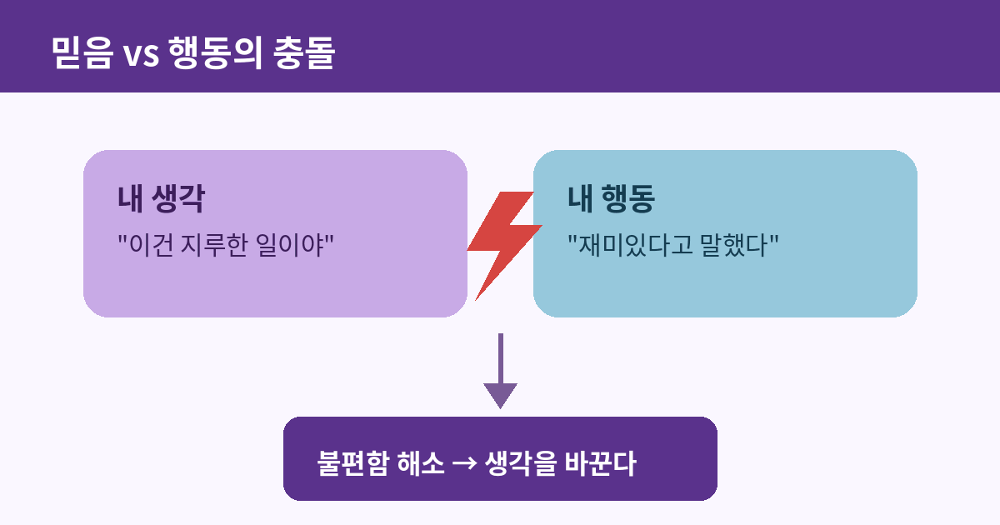

인지부조화: 마음이 스스로에게 하는 거짓말

생각과 행동이 어긋날 때, 우리 마음은 둘 중 하나를 조용히 손본다. 흥미로운 건 대부분의 경우 손보는 쪽이 행동이 아니라 생각이라는 점이다. 이 불편한 어긋남과, 그것을 없애기 위해 마음이 벌이는 은밀한 작업을 심리학에서는 인지부조화(cognitive dissonance)라고 부른다.
정의: 믿음과 행동이 부딪힐 때
인지부조화란 한 사람이 동시에 지닌 두 가지 인지(생각, 신념, 태도) 사이에, 또는 인지와 실제 행동 사이에 모순이 생겼을 때 느끼는 심리적 불편함을 말한다. 이 불편함은 단순한 혼란이 아니라 실제로 긴장과 스트레스로 체감되며, 사람은 본능적으로 이 긴장을 줄이려는 방향으로 움직인다. 문제는 그 해소 방법이 흔히 현실을 바꾸는 것이 아니라, 현실에 맞춰 생각을 다시 쓰는 쪽으로 이루어진다는 점이다.
1959년, 1달러짜리 실험
이 개념을 처음 제시한 사람은 미국의 심리학자 레온 페스팅거다. 그는 1959년 동료 제임스 칼스미스와 함께 유명한 실험을 진행했다. 참가자들에게 지루하기 짝이 없는 단순 반복 작업을 시킨 뒤, 다음 참가자에게 "이 실험은 정말 재미있었다"고 거짓말을 해달라고 부탁했다. 이때 한 그룹에는 거짓말의 대가로 1달러를, 다른 그룹에는 20달러를 지급했다. 상식적으로는 돈을 더 많이 받은 쪽이 만족했을 것 같지만, 결과는 정반대였다. 20달러를 받은 사람들은 실험이 여전히 지루했다고 솔직히 답한 반면, 겨우 1달러를 받은 사람들은 실제로 실험이 재미있었다고 스스로 믿게 되었다.
왜 적게 받은 쪽이 더 많이 믿었을까
페스팅거의 설명은 이렇다. 20달러를 받은 사람에게는 거짓말을 할 충분한 외적 이유가 있다. "돈 때문에 그랬다"는 정당화가 가능하므로 마음이 불편할 이유가 없다. 그런데 겨우 1달러를 받은 사람은 그 정도 돈으로는 거짓말을 정당화하기 어렵다. "나는 지루한 걸 재미있다고 말했다"는 사실과 "나는 거짓말을 할 사람이 아니다"라는 자기 인식이 정면으로 충돌한다. 이 부조화를 없애는 가장 손쉬운 방법은 행동을 취소하는 게 아니라 - 이미 말은 뱉어버렸으니 - 생각 쪽을 바꾸는 것이다. "사실 나는 그 실험이 꽤 재미있었어"라고 스스로 믿어버리면, 거짓말은 더 이상 거짓말이 아니게 된다.

일상 속의 인지부조화
이 현상은 실험실 밖에서도 끊임없이 발견된다. 비싼 값을 치르고 산 물건에 문제가 있어도 좀처럼 실패를 인정하지 못하고 장점을 애써 찾아내는 것, 건강에 안 좋다는 걸 알면서도 담배를 끊지 못하는 사람이 "스트레스 해소에는 이게 낫다"며 흡연의 이유를 재구성하는 것, 오래 공들인 관계나 프로젝트에서 손을 떼지 못하고 계속 투자하는 매몰비용 오류까지, 전부 인지부조화가 만들어내는 그럴듯한 자기 설득이다. 사람은 자신이 비합리적인 선택을 했다는 사실보다, 그 선택을 합리화하는 이야기를 만드는 데 훨씬 능숙하다.
알아두면 쓸모 있는 이유
인지부조화를 아는 것 자체가 유용한 방어막이 된다. 어떤 결정을 내린 뒤 갑자기 그 결정에 대한 확신이 지나치게 강해지는 순간, 그것이 결정이 정말 옳아서인지 아니면 단지 마음이 불편함을 없애려고 이야기를 지어내는 중인지 스스로 물어볼 수 있기 때문이다. 특히 큰돈이나 시간을 이미 들인 선택일수록 이 자기 합리화의 유혹은 강해진다. 결정을 내리기 전에 판단하고, 내린 뒤에는 그 판단이 사후 정당화로 굳어지고 있지 않은지 가끔 점검하는 습관이 필요한 이유다.
← 목록으로